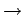

Edición del Proyecto
La figura 3.1 muestra el cuadro de diálogo de edición de Proyectos. Para acceder a él se deben seleccionar las opciones del Menú:
Proyecto  Proyecto
Los principales componentes de este cuadro de diálogo se explican a continuación:
- Casos - Editar:
- Permite editar el caso que esté seleccionado en el listado (Ver sección 5).
- Casos - Nuevo:
- Crea un nuevo caso. Éste se inserta en el listado justamente a continuación del caso que esté seleccionado. El usuario debe asignara al nuevo caso un nombre distinto al de todos los otros casos previamente definidos.
- Casos - Borar:
- Elimina el caso seleccionado. El usuario debe confirmar la acción. Al menos debe existir un caso en el proyecto.
- Casos - Ordenar:
- Permite reordenar el listado de Casos según diferentes criterios (Ver sección 5.3)
- Optimismo:
- Esta variable modela el nivel de optimismo del usuario; debe tomar un valor entre y . Al incrementar el optimismo, el valor representativo calculadao para cada número difuso se incrementa (Ver sección Valor representativo de un número difuso
.
- Representatividad:
- Esta variable controla la representatividad asignada a cada corte de un número difuso. Debe ser un número positivo o cero (Si se asigna un valor negativo se interpreta como cero). Un valor grande de esta variable da mayor peso a los cortes superiores (Ver sección Valor representativo de un número difuso
.
- Propiedades:
- El usuario puede asignar un listado de propiedades y sus respectivos valores al proyecto (Ver sección 11.4).
- Descripción:
- El usuario puede incluir un texto descriptivo del Proyecto.
Figura 3.1:
Diálogo para edición de Proyectos
|
|
Oscar Duarte
2005-10-17